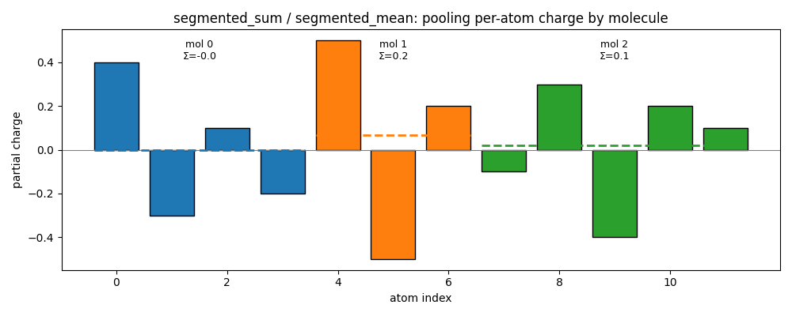

Note
Go to the end to download the full example code.
Segment Ops: Pooling, Autograd, and torch.compile#
Segment operations are the scatter/gather primitives behind graph pooling and message passing. Each one reduces or broadcasts a per-element array over variable-length segments defined by a sorted index — exactly the operation you need to pool per-atom quantities up to per-molecule ones (and to push per-molecule quantities back down to atoms).
We use a tiny batch of molecules as the running example: 12 atoms grouped into
3 molecules. A single atom_idx array maps each atom to its molecule, and the
segment ops do the pooling.
In this example you will learn:
How each of the six segment ops pools (or broadcasts) atom data over molecules
How a pooled energy backpropagates to per-atom forces (first-order grad) and to a Hessian-vector product (second-order grad) — the quantities an MLIP trains on
That the ops are
torch.compile-clean: an MLIP model can compile straight through them withfullgraph=True
Important
atom_idx must be int32 and sorted in non-decreasing order (atoms of
the same molecule are contiguous). The script runs on CUDA if available,
otherwise CPU.
Setup#
Import the six public ops and define the atom-to-molecule map. atom_idx is
the only piece of bookkeeping the segment ops need.
from __future__ import annotations
import matplotlib.pyplot as plt
import numpy as np
import torch
from nvalchemiops.torch.segment_ops import (
segmented_dot,
segmented_matvec,
segmented_mean,
segmented_mul,
segmented_rms_norm,
segmented_sum,
)
device = "cuda" if torch.cuda.is_available() else "cpu"
torch.manual_seed(0)
# 12 atoms, 3 molecules. atom_idx[i] is the molecule atom i belongs to.
atom_idx = torch.tensor(
[0, 0, 0, 0, 1, 1, 1, 2, 2, 2, 2, 2], dtype=torch.int32, device=device
)
n_atoms = atom_idx.numel()
n_molecules = 3
print(f"{n_atoms} atoms over {n_molecules} molecules, running on {device}")
12 atoms over 3 molecules, running on cuda
Pooling a per-atom scalar: segmented_sum and segmented_mean#
Give every atom a partial charge. segmented_sum gives each molecule’s net
charge; segmented_mean gives its average. Both map (n_atoms,) down to
(n_molecules,).
charge = torch.tensor(
[0.4, -0.3, 0.1, -0.2, 0.5, -0.5, 0.2, -0.1, 0.3, -0.4, 0.2, 0.1],
device=device,
)
net_charge = segmented_sum(charge, atom_idx, n_molecules)
mean_charge = segmented_mean(charge, atom_idx, n_molecules)
print("net charge per molecule :", net_charge.tolist())
print("mean charge per molecule:", mean_charge.tolist())
net charge per molecule : [-1.4901161193847656e-08, 0.20000000298023224, 0.10000001639127731]
mean charge per molecule: [-3.725290298461914e-09, 0.06666667014360428, 0.020000003278255463]
The scatter-then-reduce picture: each bar is one atom’s charge, colored by its
molecule; the dashed lines mark the per-molecule mean that segmented_mean
returns and the annotation gives the segmented_sum total.
colors = plt.cm.tab10(np.arange(n_molecules))
idx_np = atom_idx.cpu().numpy()
fig, ax = plt.subplots(figsize=(10, 4))
ax.bar(range(n_atoms), charge.cpu().numpy(), color=colors[idx_np], edgecolor="black")
ax.axhline(0, color="gray", lw=0.8)
for mol in range(n_molecules):
atoms = np.where(idx_np == mol)[0]
ax.hlines(
mean_charge[mol].item(),
atoms[0] - 0.4,
atoms[-1] + 0.4,
color=colors[mol],
ls="--",
lw=2,
)
ax.text(
atoms.mean(),
ax.get_ylim()[1] * 0.92,
f"mol {mol}\nΣ={net_charge[mol].item():.1f}",
ha="center",
va="top",
fontsize=9,
)
ax.set_xlabel("atom index")
ax.set_ylabel("partial charge")
ax.set_title("segmented_sum / segmented_mean: pooling per-atom charge by molecule")
plt.tight_layout()
plt.show()

Pooling per-atom vectors#
Give every atom a 3-vector (say a displacement). The remaining reductions act per molecule:
segmented_dotcontracts two per-atom vector fields and sums the resultsegmented_rms_normis the root-mean-square vector magnitude
displacement = torch.randn(n_atoms, 3, device=device)
velocity = torch.randn(n_atoms, 3, device=device)
overlap = segmented_dot(displacement, velocity, atom_idx, n_molecules) # (n_molecules,)
rms = segmented_rms_norm(displacement, atom_idx, n_molecules) # (n_molecules,)
print("Σ <disp, vel> per molecule:", [f"{v:.3f}" for v in overlap.tolist()])
print("RMS |disp| per molecule :", [f"{v:.3f}" for v in rms.tolist()])
Σ <disp, vel> per molecule: ['-3.245', '1.591', '1.859']
RMS |disp| per molecule : ['2.127', '1.644', '1.604']
Broadcasting per-molecule values back to atoms#
The other direction: take a per-molecule quantity and apply it to every atom in that molecule.
segmented_mulscales each atom’s vector by its molecule’s scalarsegmented_matvecapplies its molecule’s 3x3 matrix to each atom’s vector
scale = torch.tensor([2.0, 0.5, -1.0], device=device) # one scalar per molecule
scaled = segmented_mul(displacement, scale, atom_idx, n_molecules) # (n_atoms, 3)
rotation = torch.randn(n_molecules, 3, 3, device=device) # one matrix per molecule
rotated = segmented_matvec(
displacement, rotation, atom_idx, n_molecules
) # (n_atoms, 3)
print("scaled shape:", tuple(scaled.shape), "(per-atom, scaled by molecule)")
print("rotated shape:", tuple(rotated.shape), "(per-atom, matvec'd by molecule)")
scaled shape: (12, 3) (per-atom, scaled by molecule)
rotated shape: (12, 3) (per-atom, matvec'd by molecule)
First-order autograd: forces from a pooled energy#
The ops are differentiable, so a pooled energy backpropagates to per-atom
gradients with no special handling. Here a toy per-atom energy ||r||^2 is
summed into a per-molecule energy; the gradient of the total energy w.r.t.
positions is the per-atom force.
positions = torch.randn(n_atoms, 3, device=device, requires_grad=True)
atom_energy = (positions**2).sum(dim=1) # (n_atoms,)
molecule_energy = segmented_sum(atom_energy, atom_idx, n_molecules) # (n_molecules,)
total_energy = molecule_energy.sum()
total_energy.backward()
forces = -positions.grad
print("force on atom 0:", forces[0].tolist())
force on atom 0: [-0.7031645178794861, 2.8342819213867188, 1.6697746515274048]
Second-order autograd: a Hessian-vector product#
Training on forces (a “force loss”) differentiates the gradient again, so the
segment op must support double-backward. create_graph=True keeps the
first gradient in the graph; differentiating grad · v then gives the
Hessian-vector product — all the way through segmented_sum.
positions = torch.randn(n_atoms, 3, device=device, requires_grad=True)
atom_energy = (positions**2).sum(dim=1)
total_energy = segmented_sum(atom_energy, atom_idx, n_molecules).sum()
(grad,) = torch.autograd.grad(total_energy, positions, create_graph=True)
v = torch.randn_like(positions)
(hvp,) = torch.autograd.grad((grad * v).sum(), positions)
print("‖Hessian·v‖:", hvp.norm().item())
‖Hessian·v‖: 14.210844993591309
Compiling through the ops with torch.compile#
Each op is a torch.library custom op wrapping a Warp kernel, so TorchDynamo
captures it as a single opaque node. A model that pools with these ops compiles
with fullgraph=True — one graph, no breaks — and matches eager exactly.
def molecule_energy_model(positions: torch.Tensor) -> torch.Tensor:
"""Toy MLIP energy: per-atom ``||r||^2`` pooled to a scalar total energy."""
atom_energy = (positions**2).sum(dim=1)
return segmented_sum(atom_energy, atom_idx, n_molecules).sum()
positions = torch.randn(n_atoms, 3, device=device, requires_grad=True)
eager_energy = molecule_energy_model(positions)
(eager_force,) = torch.autograd.grad(eager_energy, positions)
compiled_model = torch.compile(molecule_energy_model, fullgraph=True)
compiled_energy = compiled_model(positions)
(compiled_force,) = torch.autograd.grad(compiled_energy, positions)
torch.testing.assert_close(compiled_energy, eager_energy)
torch.testing.assert_close(compiled_force, eager_force)
print("torch.compile(fullgraph=True): energy and force match eager")
torch.compile(fullgraph=True): energy and force match eager
Summary#
Using a 12-atom / 3-molecule batch, this guide showed the six segment ops in their natural roles:
Pooling per-atom data to molecules:
segmented_sum,segmented_mean,segmented_dot,segmented_rms_normBroadcasting per-molecule data back to atoms:
segmented_mul,segmented_matvecFirst-order autograd turning a pooled energy into per-atom forces
Second-order autograd (Hessian-vector product) for force-loss training
``torch.compile`` capturing the whole pooled-energy model in one graph
Each op is a Warp-backed torch.library custom op: differentiable to second
order and opaque to TorchDynamo, so it drops into a compiled MLIP model
without forcing a graph break.
print("Done.")
Done.
Total running time of the script: (0 minutes 5.007 seconds)